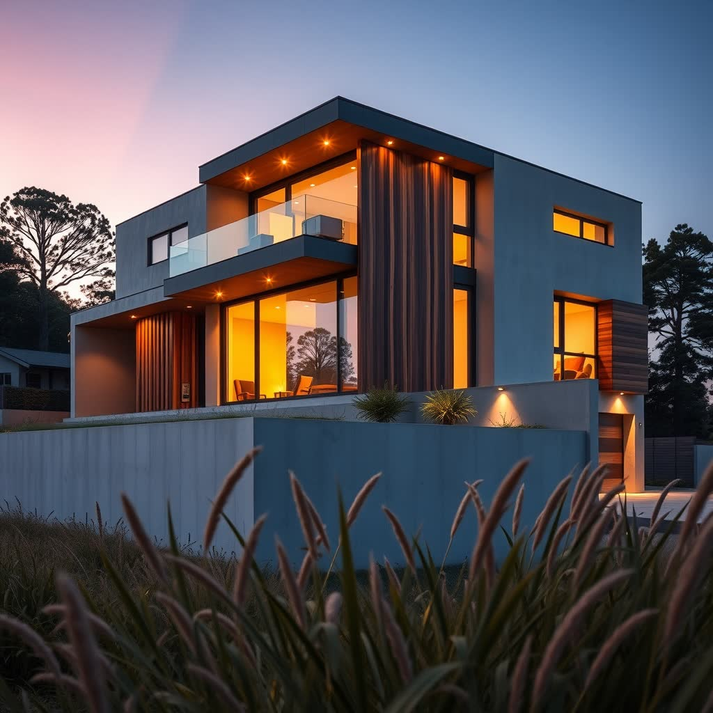
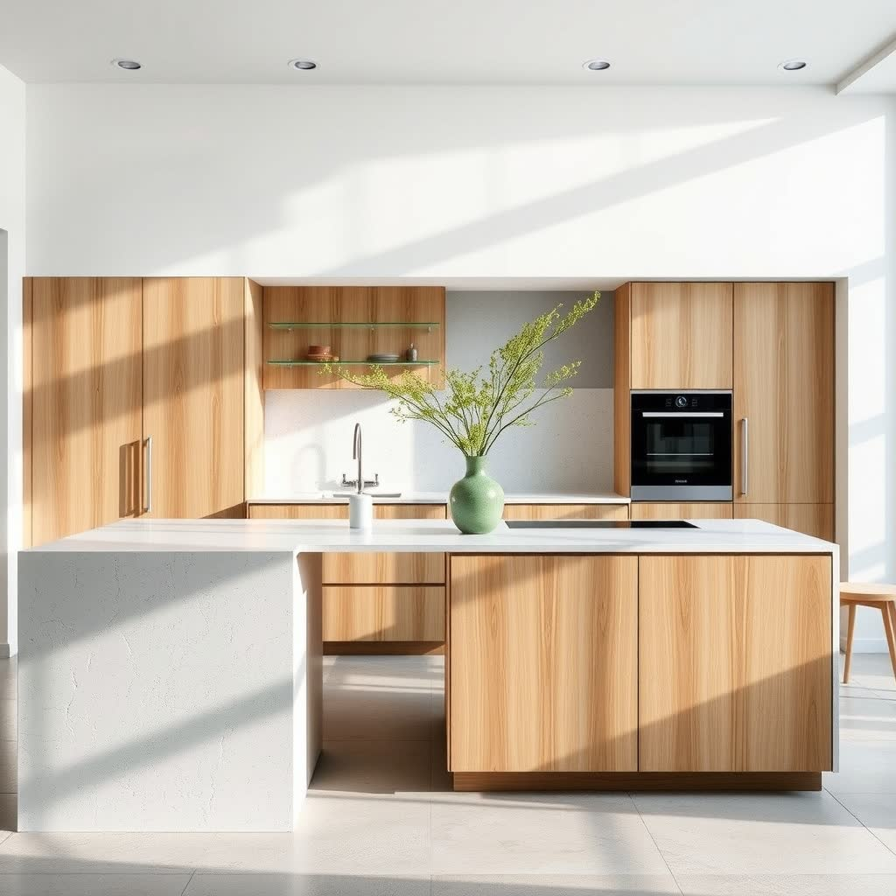
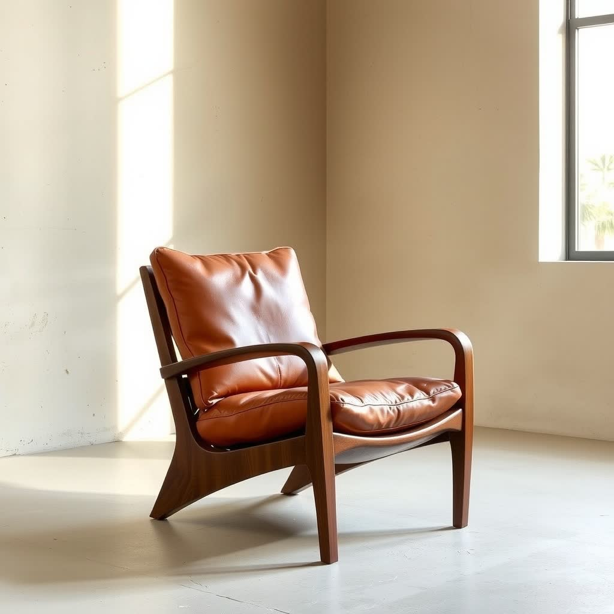
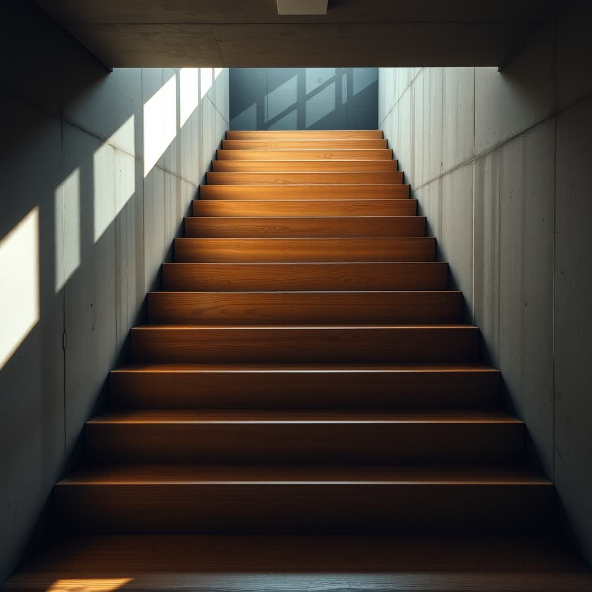
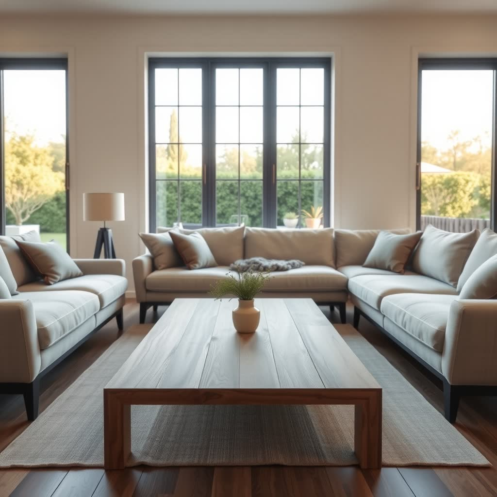
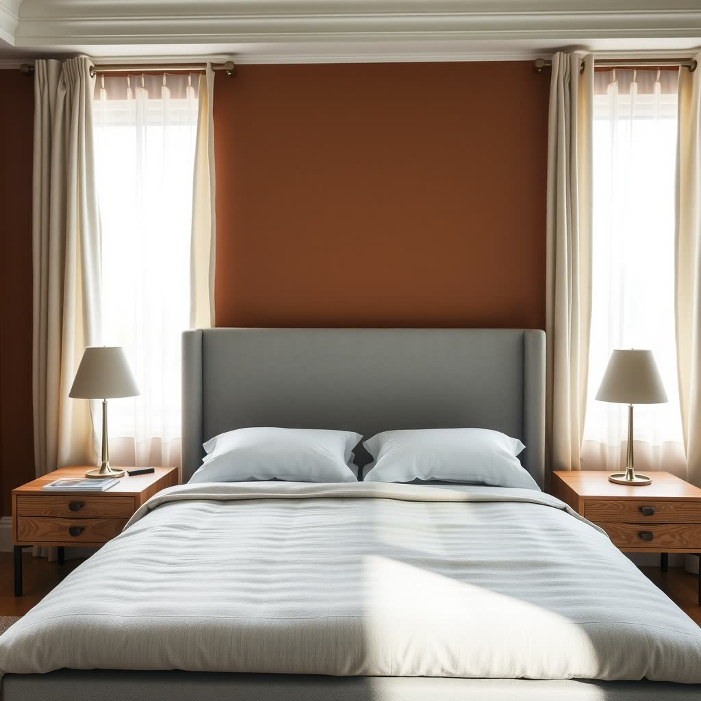

Real
Filmăm și fotografiem la fața locului
- Proiectul finalizat, la interior și la exterior
- Materialele și detaliile de execuție
- Mobilierul, în showroom sau la client acasă
- Oamenii din spatele proiectului, dacă vor să apară
Arhitectură · Construcții · Design interior · Mobilier
S&T Advertising face poze, video și reclame pentru firmele din arhitectură, construcții și mobilier. Pornim de la ce există cu adevărat, iar AI-ul ne ajută să scoatem din aceeași filmare mai mult conținut, mai repede.

Real + AI
Real
AI
Servicii
Case, apartamente, birouri și spații comerciale. Cadre de ansamblu și detalii de execuție, pentru portofoliu și pentru rețele.
Poze de catalog, produse puse în context și clipuri scurte care arată materialul de aproape.
Altă lumină, alt anotimp sau alt stil de amenajare, din aceleași poze. Mobilare virtuală pentru spațiile goale.
Clipuri verticale de 8–30 de secunde pentru Instagram, TikTok și Facebook, din filmări reale și scene generate.
Un plan pe lună cu reels, carusele și postări, gata de publicat, cu textele scrise.
Pentru cine
Cum lucrăm
Ne spui ce vrei să vinzi, cui și unde postezi. Pleci cu o ofertă clară, pe puncte.
Venim la proiect sau în showroom și facem pozele și filmările de bază.
Facem variantele, video-urile și reclamele. Verificăm fiecare cadru, ca produsul să arate exact ca în realitate.
În formatele potrivite pentru fiecare rețea, cu textele pentru postare, dacă vrei.
Exemple
Toate imaginile de pe această pagină sunt generate cu AI, ca exemple de stil. Proiectele reale pe care le facem apar aici pe măsură ce le terminăm.





Ce promitem
AI-ul schimbă lumina, decorul și mișcarea. Variantele de culoare și de material sunt doar cele pe care le ai cu adevărat în ofertă.
Marcăm conținutul generat acolo unde platformele sau legea o cer. La imobiliare, camerele mobilate virtual sunt semnalate ca atare.
Folosim pozele și filmările tale, iar în clipuri apar doar oamenii care au spus da.
Cine suntem
Unul dintre noi vine din AI și din producția de conținut: generează imagini și video, montează și știe ce merge pe rețele. Celălalt lucrează în domeniu și știe ce vrea să vadă un client înainte să aleagă un proiect sau o piesă de mobilier.
Împreună facem conținut care arată bine și spune adevărul despre produs.
Întrebări
Nu. Pornim de la poze și filmări reale. AI-ul vine după, ca să facem variante, video și reclame din același material.
Depinde de câte locații filmăm, câte materiale vrei și cât de des postezi. După prima discuție primești o ofertă pe puncte.
Da. Le marcăm cum cer platformele. Dacă o imagine arată un spațiu mobilat virtual, spunem clar asta, ca să nu inducă în eroare cumpărătorii.
Contact
Spune-ne în două rânduri ce faci și ce vrei să arăți. Îți răspundem cu o propunere.
Telefonul, emailul și conturile S&T Advertising apar aici în curând.